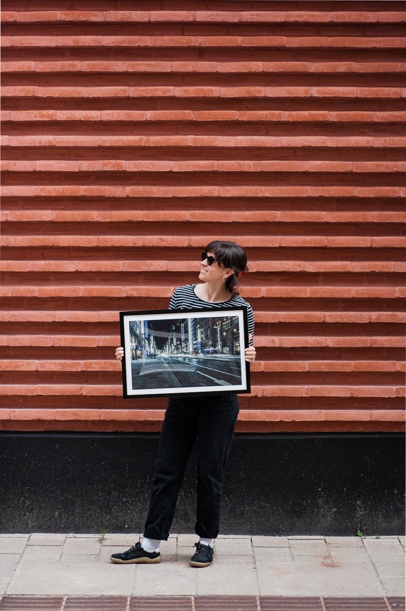

About

I am a scientist and photographer based in Europe. My work takes me to places where light behaves unexpectedly — early mornings in narrow streets, late evenings in markets that are just starting to empty. I photograph what stays with me after I leave.
The Prints
Each print is produced from a high-resolution original and available in two sizes. Colours are calibrated for fine art printing on premium paper. Every image is part of a limited series — once a run closes, it does not reopen.
Shop
Prints are available through the La Menchu Photography Etsy shop.
Contact
For enquiries, commissions, or licensing: lamenchu@pm.me